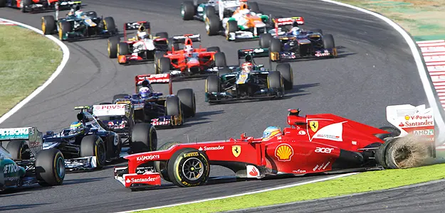

// FORMACIÓN Y DESARROLLO
Avance 2,45%
Tal vez sea simplemente una excusa. Pero me deja tranquilo un rato.
2 de agosto de 2012 · 1 minuto de lectura
“El que aprende y aprende y no practica lo que sabe, es como el que ara y ara y no siembra”
Han habido años mejores, pero siempre se está a tiempo de evaluar lo hecho para replanificar lo pendiente. En los proyectos largos es recomendable definir una etapa intermedia en la que éste es revisado, y se llevan a cabo las valoraciones pertinentes sobre lo planeado y lo ejecutado, así como sus resultados, en consideración al logro de los objetivos planteados.
Estudios relacionados

GIAR
GIAR son las siglas de Grupo de Inteligencia Artificial y Robotica, el cuál se formó en 1986 en el ámbito de la Secretaría de Ciencia y Tecnología de la UTN FRBA.
Marzo 2012Controlador Motor BLDC
Un sistema de control de un Motor Trifásico del tipo BLDC de baja potencia típicamente utilizado en discor rígidos.
Diciembre 2011
41% Ingeniero
El piano marca el límite y si se intenta ir más allá se pone en juego la solides de las bases con la que uno siempre quiso trabajar.
Septiembre 2011// EL SIGUIENTE PASO
TU PRODUCTO.
SU PRÓXIMA ETAPA.
Una primera conversación para entender el desafío y ver si puedo aportar valor.
↗ Hablemos de tu proyecto